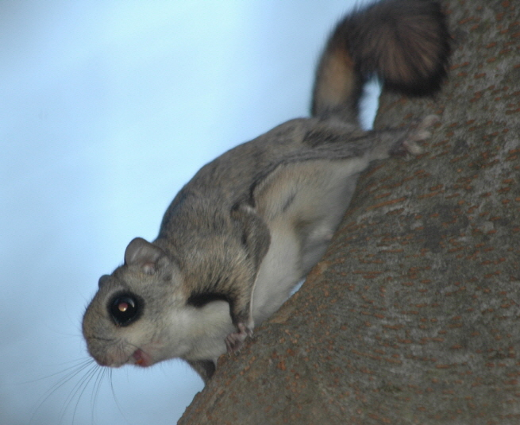

하늘다람쥐

주요특징 및 설명
- 종명: 하늘다람쥐(Flying squirrel)
- 학명: Pteromys volans
- 생물학적 분류: 청설모과 하늘다람쥐속
- 분포: 유럽, 아시아 북부, 한국, 중국 북부
- 등급: 멸종위기종 Ⅱ급, 천연기념물 제328호
- 주요 특징
하늘다람쥐는 앞뒷다리 사이의 비막으로 나무 사이를
활공하며, 넓적하고 평평한 꼬리로 비행 방향을 조절한다.
주로 밤에 활동하며, 나뭇구멍 속에서 생활한다.
암컷은 일 년에 2-6마리의 새끼를 두 차례 낳고, 어린 새끼는
6주가 되면 스스로 활공할 수 있다.